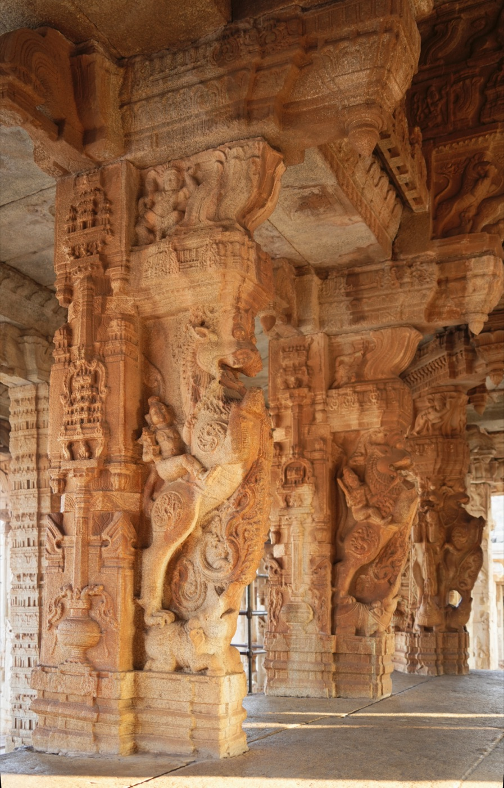
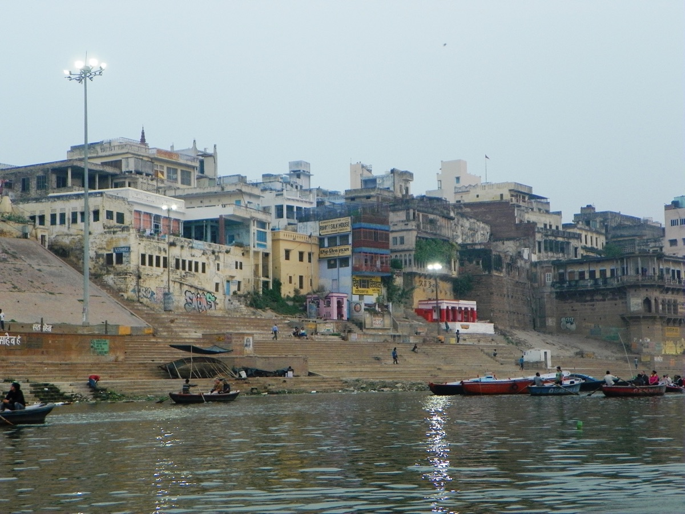
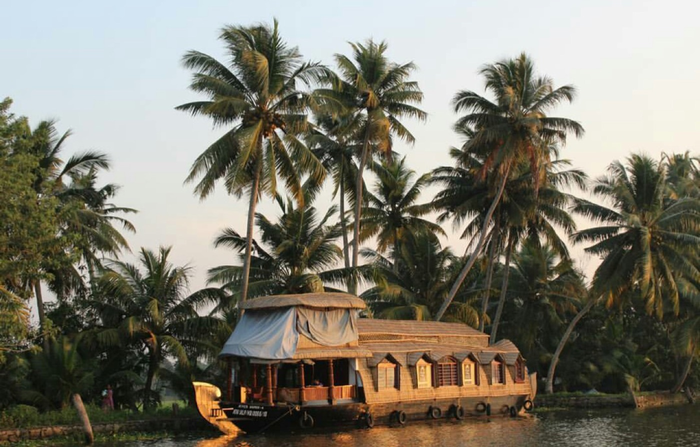

The Journal
Reflections and stories from the timeless land.
Field notes, essays and short studies from the places we travel — written by our guides, scholars and returning travellers.
Field notes, essays and short studies from the places we travel — written by our guides, scholars and returning travellers.

Why the rivers, mountains and cardinal directions of the subcontinent were never just geography to begin with.

What a five-minute aarti can do to a traveller’s sense of time — and why that matters more than any monument.

Dharma isn’t a concept you read about. It’s one you start to feel differently after two weeks on the ground.

Inside the family workshops still hand-casting temple lamps the way their great-grandfathers did.

How the ruins of Vijayanagara became one of the most quietly moving places in India — precisely because they’re incomplete.

The Himalayan foothills without the crowds — and what that silence teaches a first-time visitor.

A field note from Varanasi at 5:40am, before the city wakes and the river takes over.

Every carving on a gopuram is a sentence. Here’s how to start reading the ones you’ll walk beneath.

On the etiquette, humility and preparation that separate the two — and why we brief every traveller on it.

No spam — just field notes. Unsubscribe anytime.